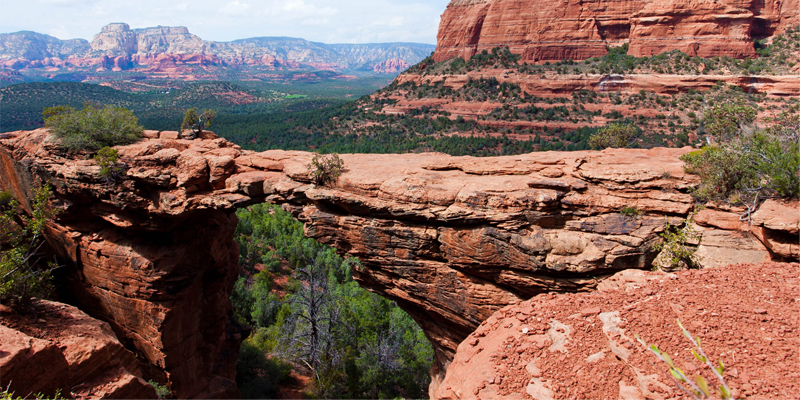

Седона

Почему Седона
Седона — небольшой городок в Аризоне, заслуживающий большего!
Рассмотрим 5 причин, по которым Седона круче, чем гранд каньон!
Причины
Настоящий городок
— №1 —
Седона - не аттракцион для туристов, там
течёт своя жизнь
Преимущества
-
Жилье
Рекомендуем пожить в настоящем
мотеле, всё как в кино! -
Еда
Всегда заказывайте фирменный бургер,
вы не разочаруетесь! -
Сувениры
Не только китайского, но и местного
производства!
Причины

Там есть мост дьявола
— №2 —
Да, по нему можно пройти! Если конечно
вы осмелитесь
Преимущества
-
Небольшая
площадь— №3 —
все достопримечательности
находятся очень близко -
Красивая
дорога— №4 —
ехать в седону из лас-вегаса совсем
не скучно! -
Мало
туристов— №5 —
большинство едет в гранд каньон
и толпится там
Заинтересовались?
Укажите предполагаемые даты поездки, и мы покажем вам лучшие предложения гостиниц в седоне